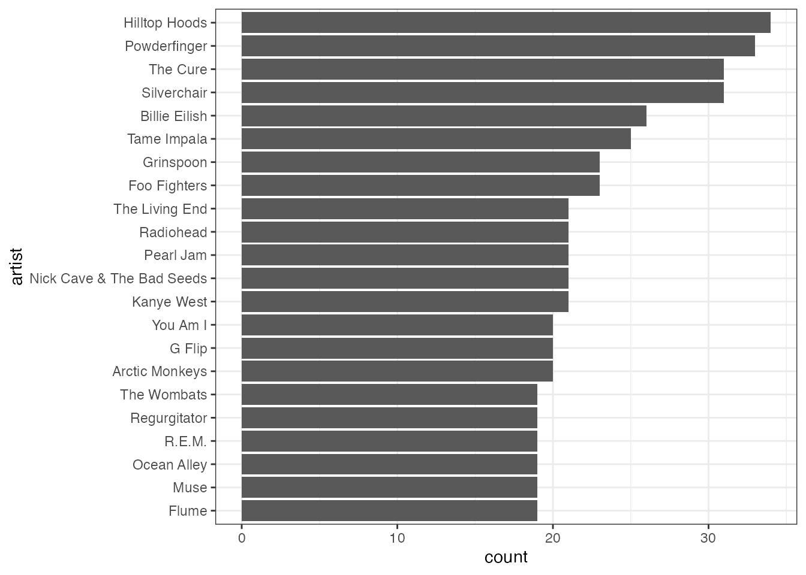
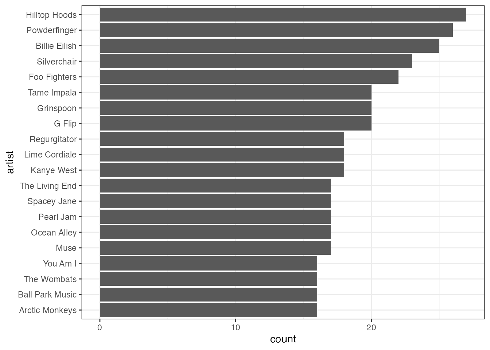
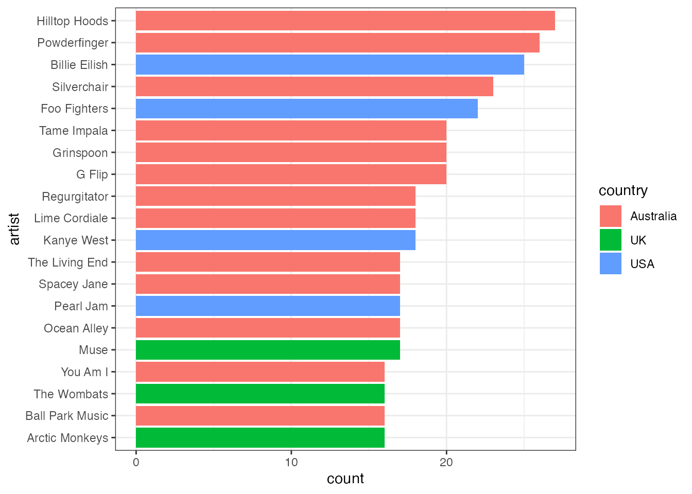
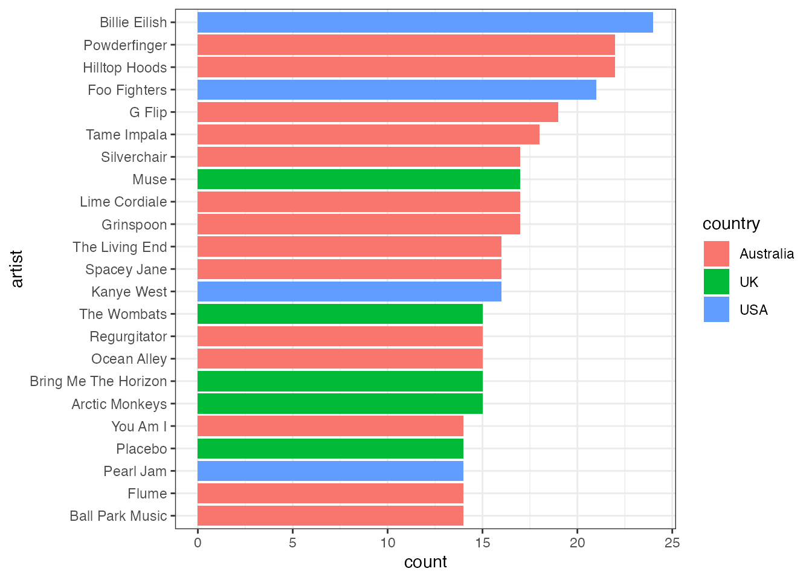
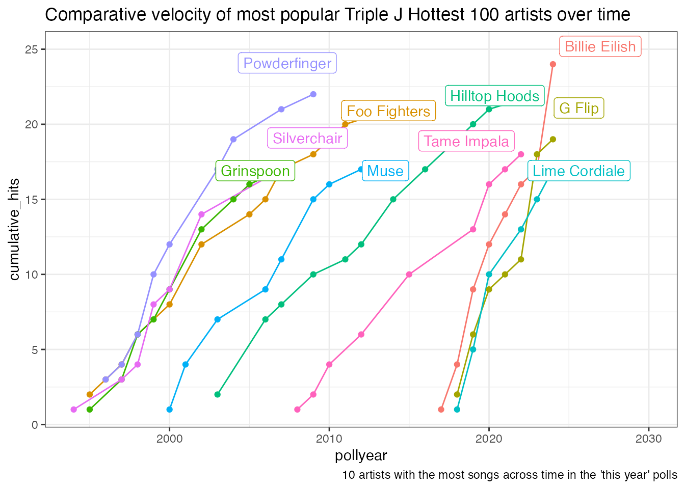

Exploring Triple J Hottest 100 data
Margaret Colville
Source:vignettes/exploration.Rmd
exploration.Rmd
library(hottest100)
library(dplyr)
#>
#> Attaching package: 'dplyr'
#> The following objects are masked from 'package:stats':
#>
#> filter, lag
#> The following objects are masked from 'package:base':
#>
#> intersect, setdiff, setequal, union
library(stringr)
library(forcats)
library(ggplot2)
library(ggrepel)Table overview
This package has three main tables. Let’s start by taking a quick look at each of them.
The first one is artists, an overview of each artist in
the dataset.
head(artists)
#> artist country releaseyear
#> 1 Spiderbait Australia 1996
#> 2 Tool USA 1996
#> 3 Ben Folds Five USA 1996
#> 4 Butthole Surfers USA 1996
#> 5 Bush UK 1996
#> 6 Powderfinger Australia 1996Next is polls, a list of each poll that has been run.
They are a mix of “songs of the year”, and “best songs of all time”
head(polls)
#> year alltime alltimedescription colorRGB contrastColorRGB
#> 1 2025 TRUE Of Australian Songs 224, 49, 37 <NA>
#> 2 2024 FALSE 119, 38, 127 <NA>
#> 3 2023 FALSE 221, 121, 62 0, 0, 0
#> 4 2023 TRUE Like A Version 46, 65, 79 <NA>
#> 5 2022 FALSE 248, 215, 189 0, 0, 0
#> 6 2021 FALSE 0, 135, 0 <NA>Finally, the major table of the dataset is the tracks
table, a list of all tracks which have appeared in any of the charts,
along with information such as ranking and release year (since this does
not always align with the year the poll ran).
head(tracks)
#> alltime artist country id pollyear position releaseyear
#> 1 FALSE Spiderbait Australia 1 1996 1 1996
#> 2 FALSE Tool USA 2 1996 2 1996
#> 3 FALSE Ben Folds Five USA 3 1996 3 1996
#> 4 FALSE Butthole Surfers USA 4 1996 4 1996
#> 5 FALSE Bush UK 5 1996 5 1996
#> 6 FALSE Powderfinger Australia 6 1996 6 1996
#> track
#> 1 Buy Me a Pony
#> 2 Stinkfist
#> 3 Underground
#> 4 Pepper
#> 5 Glycerine
#> 6 Pick You UpInitial exploration
So, let’s explore the data a bit.
First question: Do the same tracks appear in multiple polls? (Answer: Yes, they do, because there are several “Best song of all time” polls in the collection!)
tracks |>
group_by(artist, track) |>
summarise(count = n()) |>
ungroup() |>
arrange(-count)
#> `summarise()` has grouped output by 'artist'. You can override using the
#> `.groups` argument.
#> # A tibble: 3,729 × 3
#> artist track count
#> <chr> <chr> <int>
#> 1 Hunters & Collectors Throw Your Arms Around Me 6
#> 2 Joy Division Love Will Tear Us Apart 5
#> 3 New Order Blue Monday 5
#> 4 Nick Cave & The Bad Seeds Into My Arms 5
#> 5 Pink Floyd Wish You Were Here 5
#> 6 Silverchair Tomorrow 5
#> 7 The Jimi Hendrix Experience All Along the Watchtower 5
#> 8 The Smiths How Soon Is Now? 5
#> 9 You Am I Berlin Chair 5
#> 10 Angus & Julia Stone Big Jet Plane 4
#> # ℹ 3,719 more rowsOkay, Throw Your Arms Around Me appears the most. Which years did it appear?
tracks |>
filter(track == 'Throw Your Arms Around Me' )
#> alltime artist country id pollyear position
#> 1 TRUE Hunters & Collectors Australia 90 1991 4
#> 2 TRUE Hunters & Collectors Australia 379 2009 23
#> 3 FALSE Paul McDermott Australia 667 1998 31
#> 4 TRUE Hunters & Collectors Australia 821 1990 2
#> 5 TRUE Hunters & Collectors Australia 1914 1989 2
#> 6 TRUE Hunters & Collectors Australia 2403 1998 2
#> 7 TRUE Hunters & Collectors Australia mprDp2RE1r 2025 25
#> releaseyear track
#> 1 1985 Throw Your Arms Around Me
#> 2 1985 Throw Your Arms Around Me
#> 3 1998 Throw Your Arms Around Me
#> 4 1985 Throw Your Arms Around Me
#> 5 1985 Throw Your Arms Around Me
#> 6 1985 Throw Your Arms Around Me
#> 7 1986 Throw Your Arms Around MeHuh, Paul McDermott’s cover also got a mention! What about other Hunters & Collectors songs?
tracks |>
filter(artist == 'Hunters & Collectors' ) |>
group_by(artist, track) |>
summarise(count = n()) |>
ungroup() |>
arrange(-count)
#> `summarise()` has grouped output by 'artist'. You can override using the
#> `.groups` argument.
#> # A tibble: 7 × 3
#> artist track count
#> <chr> <chr> <int>
#> 1 Hunters & Collectors Throw Your Arms Around Me 6
#> 2 Hunters & Collectors The Slab 3
#> 3 Hunters & Collectors Holy Grail 2
#> 4 Hunters & Collectors Say Goodbye 2
#> 5 Hunters & Collectors Talking to a Stranger 2
#> 6 Hunters & Collectors Human Frailty 1
#> 7 Hunters & Collectors Talking To A Stranger 1Oh, the song Talking to a Stranger appears several
different times with different capitalisation, and R is case sensitive,
so it doesn’t group them together. This could be a problem.
Clean up capitalisation
Let’s look at cleaning the field to make sure that doesn’t cause problems.
tracks_clean <- tracks |>
mutate(track_clean = str_to_title(track))So, how many tracks are affected by these capitalisation issues?
tracks_clean |>
group_by(artist, track, track_clean) |>
summarise(count = n()) |>
ungroup() |>
group_by(artist, track_clean) |>
summarise(count = n()) |>
ungroup() |>
filter(count > 1) |>
arrange(-count)
#> `summarise()` has grouped output by 'artist', 'track'. You can override using
#> the `.groups` argument.
#> `summarise()` has grouped output by 'artist'. You can override using the
#> `.groups` argument.
#> # A tibble: 35 × 3
#> artist track_clean count
#> <chr> <chr> <int>
#> 1 AC/DC Back In Black 2
#> 2 AC/DC Highway To Hell 2
#> 3 Arctic Monkeys I Bet You Look Good On The Dancefloor 2
#> 4 Ball Park Music It's Nice To Be Alive 2
#> 5 Billy Bragg Greetings To The New Brunette 2
#> 6 Billy Bragg Waiting For The Great Leap Forwards 2
#> 7 Daft Punk Around The World 2
#> 8 Disclosure Latch {Ft. Sam Smith} 2
#> 9 Flight Facilities Clair De Lune {Ft. Christine Hoberg} 2
#> 10 Flume On Top {Ft. T-Shirt} 2
#> # ℹ 25 more rowsNow that we’ve fixed that, let’s get back to the analysis.
Most popular artists
What about artists? Which artists have the most songs in the list?
tracks_clean |>
group_by(artist) |>
summarise(count = n()) |>
ungroup() |>
filter(count > 1) |>
slice_max(count, n = 20) |>
mutate(artist = fct_reorder(artist, count)) |>
ggplot(aes(x = count, y = artist)) +
geom_col() +
theme_bw()
Presumably a lot of those are the same popular songs repeated. What about distinct tracks?
tracks_clean |>
select(artist, track_clean) |>
distinct() |>
group_by(artist) |>
summarise(count = n()) |>
ungroup() |>
filter(count > 1) |>
slice_max(count, n = 20) |>
mutate(artist = fct_reorder(artist, count)) |>
ggplot(aes(x = count, y = artist)) +
geom_col() +
theme_bw()
We could colour it by country, too.
tracks |>
mutate(track_clean = str_to_title(track)) |>
select(artist, track_clean, country) |>
distinct() |>
group_by(artist, country) |>
summarise(count = n()) |>
ungroup() |>
filter(count > 1) |>
slice_max(count, n = 20) |>
mutate(artist = fct_reorder(artist, count)) |>
ggplot(aes(x = count, y = artist, fill = country)) +
geom_col() +
theme_bw()
#> `summarise()` has grouped output by 'artist'. You can override using the
#> `.groups` argument.
What if we do only the “This year” polls, excluding the all times?
tracks_clean |>
filter(!alltime) |>
select(artist, track_clean, country) |>
distinct() |>
group_by(artist, country) |>
summarise(count = n()) |>
ungroup() |>
filter(count > 1) |>
slice_max(count, n = 20) |>
mutate(artist = fct_reorder(artist, count)) |>
ggplot(aes(x = count, y = artist, fill = country)) +
geom_col() +
theme_bw()
#> `summarise()` has grouped output by 'artist'. You can override using the
#> `.groups` argument.
Billie Eilish manages to become a lot more prominent with that additional filter.
Old timers and newbies
The artists that are appearing frequently are an interesting mix of old timers and newbies. For the most common artists, have they had a long career, or did they rocket up the charts quickly?
tracks_clean |>
filter(!alltime )|>
semi_join(
# Filter to only the artists with the most appearances
{tracks_clean |>
filter(!alltime ) |>
group_by(artist) |>
summarise(count = n()) |>
ungroup() |>
slice_max(count, n = 10)}
) |>
group_by(artist, pollyear) |>
summarise(hits = n()) |>
ungroup() |>
arrange(artist, pollyear) |>
group_by(artist) |>
mutate(cumulative_hits = cumsum(hits)) |>
ungroup() |>
group_by(artist) |>
mutate(total_hits = sum(hits)) |>
# Adding a filtered version of the artist's name for use in labelling the chart
mutate(artist_name = ifelse(total_hits == cumulative_hits, artist, NA_character_)) |>
# We'll use artist_name_y to offset the name positions a bit from the actual points so we can see both
mutate(artist_name_y = ifelse(total_hits == cumulative_hits, cumulative_hits + 1, NA_integer_)) |>
ungroup() |>
ggplot(aes(x = pollyear, y = cumulative_hits, group = artist, col = artist)) +
geom_line() +
geom_point() +
geom_label_repel(aes(y = artist_name_y, label = artist_name)) +
theme_bw() +
theme(legend.position = 'none') +
scale_x_continuous(limits = c(NA, 2030)) +
labs(title = "Comparative velocity of most popular Triple J Hottest 100 artists over time",
caption = "10 artists with the most songs across time in the 'this year' polls")
#> Joining with `by = join_by(artist)`
#> `summarise()` has grouped output by 'artist'. You can override using the
#> `.groups` argument.
#> Warning: Removed 77 rows containing missing values or values outside the scale range
#> (`geom_label_repel()`).
As might be expected, the older bands have had a lot more time to percolate, while artists like Billie Eilish and G Flip have had much more rapid increases over time.